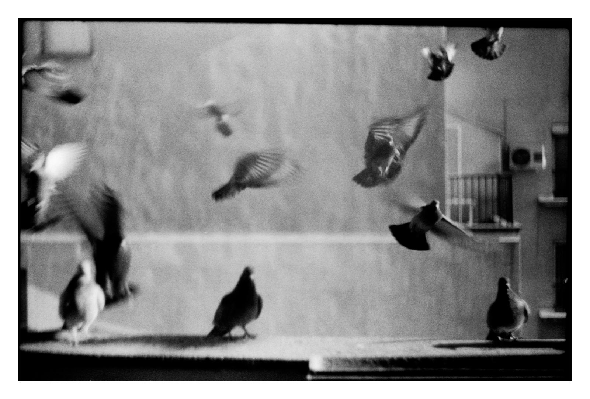

Свикнали сме да си представяме чисто сиви и обикновени гълъби
по улиците,но в действителност семейството им включва и много
видове с повече цветове и чуждестранен вид.

Предците на градските гълъби са обитавали скали,поради което
харесват да кацат на сградите-високи и твърди като скалите.Но
има и гълъби,живеещи в тропиците,a гугутки населяват
пустини.Като цяло гугутките предпочитат горски райони,което
обяснява по-малката им зависимост от хората.
Опитомените гълъби са много по-зависими,защоте не притежават
всички умения за самостоятелно оцеляване,докато дивите са
по-недоверчиви и избчгват директен контакт с хора.Въпреки това
изглежда,че гълъбите са склонни да са близо до обществото и
градските са свикнали да ядат човешка храна,дори и вредна.
Някои домашни гълъби имат екзотична окраска и естетически
пера.Други пък са състезателни и са селектирани специално,за да
достигат големи скорости.
Умението на семейство да се приспособява към различен климат
прави оцеляването и разпространението му далеч по-лесно.